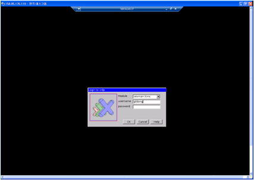

R 파이썬 소프트레이어 클라우드 그리고 xwMOOC
클라우드 리눅스 위에 xrdp로 그래픽 사용자 인터페이스 사용
학습 목표
- 클라우드 리눅스에 CLI 대신 GUI 사용
클라우드 리눅스를 원격 연결
클라우드에 가상컴퓨터를 생성한 뒤에 데스크탑 환경을 설치하고 VNC 원격 데스크탑 혹은 XRDP를 사용해서 윈도우와 마찬가지로 그래픽 사용자 인터페이스를 이용한다.
sudo apt-get install ubuntu-desktop
sudo apt-get install xrdp
sudo /etc/init.d/xrdp start원격 컴퓨터에 우분투 데스크탑 환경을 설치하고 나서 XRDP도 이어서 설치한다. 설치가 완료되면 XRP 응용프로그램을 실행한다.
sudo adduser gildong sudo윈도우 원격 데스크톱연결을 사용하기 전에 root가 아닌 사용자를 gildong으로 생성하고 sudo 권한도 부여한다.
su gildong
echo "gnome-session --session=ubuntu-2d" > .xsessiongildong 사용자 세션 환경을 지정한다. nano 편집기를 사용해서 내용을 .xsession 파일에 저장해도 된다.
윈도우에서 클라우드 우분투 가상컴퓨터에 로그인 하기 이해서 시작 -> 실행을 클릭하고 mstsc를 입력하여 원격 데스크톱연결을 실행한다.

윈도우 원격 데스크톱 연결 화면
마지막으로 XRDP 로그인 화면이 나오고 비밀번호를 넣게 되면 그래픽 사용자 인터페이스를 원격 컴퓨터에서 이용하게 된다.

XRDP 로그인 화면